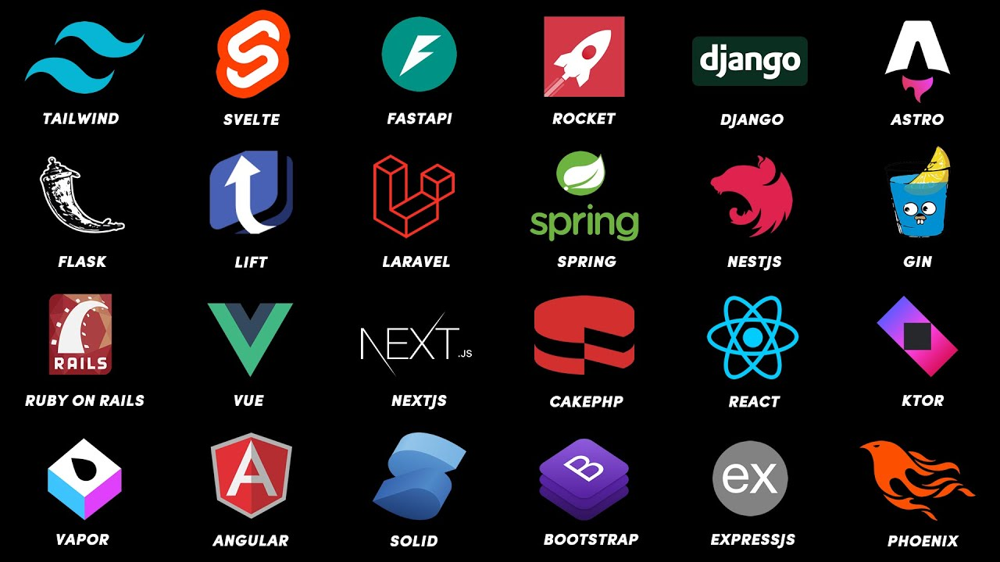
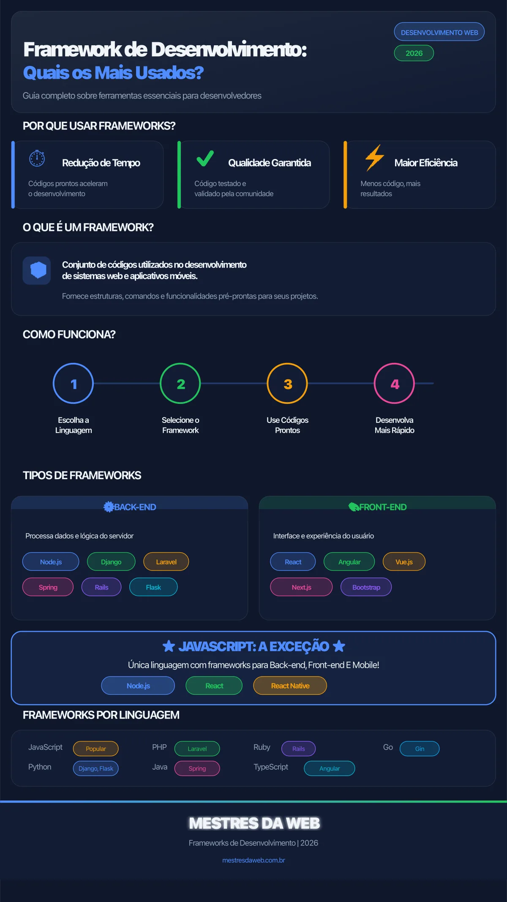

Pesquisa sobre Frameworks
para
Desenvolvimento Web
Frameworks, no contexto de desenvolvimento de sites e aplicativos, são estruturas de software que fornecem uma base reutilizável de bibliotecas, módulos e padrões para acelerar a criação de aplicações, aumentar a padronização do código e facilitar a manutenção.
Eles se tornaram centrais no desenvolvimento web porque as aplicações modernas ficaram mais complexas, exigindo mais qualidade, segurança, escalabilidade e integração entre partes cliente e servidor. O framework funciona como uma base sobre a qual o desenvolvedor constrói componentes específicos do projeto, em vez de começar do zero, o que tende a reduzir o tempo de desenvolvimento e melhorar a produtividade e a confiabilidade.
Na literatura, o valor principal de um framework está em organizar o desenvolvimento de aplicações complexas, promover boas práticas, reutilização de código, modularidade e manutenção mais simples ao longo do ciclo de vida do software.
Ver referênciasDefinição e Características
O Que É um Framework
Um framework pode ser definido como uma estrutura ou ambiente de software voltado a apoiar o desenvolvimento de sites, aplicações web e serviços, oferecendo recursos prontos para tarefas recorrentes como rotas, interação com banco de dados, componentes de interface e integração com APIs.
Diferentemente de uma biblioteca isolada, o framework tende a unificar componentes e impor uma forma mais estruturada de desenvolvimento, servindo como "base" arquitetural da aplicação.
Principais Benefícios
Entre os benefícios mais citados estão maior velocidade de desenvolvimento, padronização, melhor qualidade de código, reutilização de módulos e maior facilidade para manutenção e evolução futura. Frameworks também são especialmente úteis em aplicações com lógica de negócio complexa, maiores exigências de segurança, necessidade de escalabilidade e equipes com vários desenvolvedores trabalhando simultaneamente.
Tipos e Exemplos
Frameworks Front-end
No front-end, os exemplos mais recorrentes são React, Angular e Vue, usados para construir interfaces interativas e aplicações web modernas, especialmente no modelo SPA. A comparação entre esses frameworks mostra que eles atendem perfis diferentes: Vue tende a ser associado a facilidade de aprendizado e bom desempenho, React a escalabilidade e popularidade, e Angular a arquiteturas maiores e mais estruturadas.
Frameworks Back-end
No back-end, aparecem com frequência Django, Spring, Laravel, Rails, Flask e Express.js, escolhidos conforme o porte do sistema, requisitos de segurança, produtividade e ecossistema tecnológico. Há evidência de que alguns frameworks são mais indicados para aplicações maiores e mais exigentes, enquanto outros funcionam melhor em projetos menores ou mais simples.
Classificações
A literatura também classifica frameworks por função ou arquitetura, incluindo frameworks de aplicação, de sistemas de software e frameworks web voltados a RIA, request-based ou component-based.

Critérios de Escolha
A escolha de um framework depende do projeto e não existe um "melhor" framework universal. Os critérios mais consistentes na literatura incluem requisitos funcionais e não funcionais, complexidade da aplicação, desempenho, escalabilidade, segurança, facilidade de manutenção, curva de aprendizado, documentação, suporte da comunidade e compatibilidade com a infraestrutura existente. Para uma avaliação mais sistemática, alguns estudos propõem ponderar critérios e atribuir notas comparativas aos frameworks, usando abordagens como listas de critérios, pesos, avaliação por qualidade de software ou métodos de decisão multicritério.
Critérios técnicos
- Suporte a banco de dados
- ORM (mapeamento objeto-relacional)
- Template engine
- Integração com outros sistemas
- Caching
- Desempenho
- Modularidade
- Portabilidade
Critérios organizacionais e estratégicos
- Experiência da equipe
- Tempo de entrega
- Orçamento
- Continuidade do suporte
- Evolução futura da tecnologia
- Alinhamento com objetivos de negócio
Em aplicações com alta interatividade, o front-end pode pesar mais na decisão; em sistemas intensivos em dados ou regras de negócio, o back-end robusto tende a ser mais decisivo.

Conclusão
Frameworks, no desenvolvimento de sites e aplicativos, são bases estruturadas que oferecem componentes reutilizáveis, padrões e ferramentas para tornar o desenvolvimento mais rápido, padronizado e sustentável.
A literatura converge em um ponto central: a escolha correta depende do contexto do projeto, da equipe e dos requisitos técnicos e de negócio, de modo que o framework ideal é aquele que melhor equilibra desempenho, escalabilidade, segurança, manutenção e produtividade para a necessidade específica.
Referências
- A, V., & G., K. (2023). MODERN FRAMEWORKS FOR WEB-APPLICATION DEVELOPMENT. Ġylym ža̋ne bìlìm. https://doi.org/10.52578/2305-9397-2023-3-2-42-50
- R., Yadav, A., Dubey, A., Prajapati, D., & Srivastava, A. (2023). Evolution of Web Development Frameworks. International Journal for Research in Applied Science and Engineering Technology. https://doi.org/10.22214/ijraset.2023.57011
- Benmoussa, K., Laaziri, M., Khoulji, S., Larbi, K. M., & Yamami, A. E. (2019). A new model for the selection of web development frameworks: application to PHP frameworks. International Journal of Electrical and Computer Engineering (IJECE). https://doi.org/10.11591/ijece.v9i1.pp695-703
- Dymora, P., Mazurek, M., & Nycz, M. (2023). Comparison of Angular, React, and Vue Technologies in the Process of Creating Web Applications on the User Interface Side. Journal of Education, Technology and Computer Science. https://doi.org/10.15584/jetacomps.2023.4.21
- Haris, N. A., & Hasim, N. (2019). PHP Frameworks Usability in Web Application Development. International Journal of Recent Technology and Engineering. https://doi.org/10.35940/ijrte.c1020.1083s19
- Joshi, P. D. A. M. (2021). PHP Frameworks in Web Application Development.
- Kaluža, M., Kalanj, M., & Vukelić, B. (2019). A comparison of back-end frameworks for web application development. Zbornik Veleučilišta u Rijeci. https://doi.org/10.31784/zvr.7.1.10
- Kaluža, M., Troskot, K., & Vukelić, B. (2018). COMPARISON OF FRONT-END FRAMEWORKS FOR WEB APPLICATIONS DEVELOPMENT. 261-282. https://doi.org/10.31784/zvr.6.1.19
- Lu, M.-T., & Yeung, W. (1998). A framework for effective commercial Web application development. Internet Res., 8, 166-173. https://doi.org/10.1108/10662249810211638
- Mehmood, A. (2023). WEB DEVELOPMENT FRAMEWORKS: COMPARING REACT, ANGULAR, AND VUE. Computer Science Bulletin. https://doi.org/10.71465/csb103
- Muhammed, T., Mehmood, R., Abozinadah, E., & Sharaf, S. (2019). SelecWeb: A Software Tool for Automatic Selection of Web Frameworks. Smart Infrastructure and Applications. https://doi.org/10.1007/978-3-030-13705-2_14
- Nuari, R. (2024). Sistem Pendukung Keputusan untuk Pemilihan Platform Pengembangan Aplikasi Web Menggunakan Metode MOORA. CHAIN: Journal of Computer Technology, Computer Engineering, and Informatics. https://doi.org/10.58602/chain.v2i3.146
- Olana, B., & Tolasa, D. (2025). Adoption of Web Application Framework to Enhance Web Project Result. American Journal of Computer Science and Technology. https://doi.org/10.11648/j.ajcst.20250802.15
- Pazdriy, I. (2023). COMPARATIVE ANALYSIS OF SOFTWARE DEVELOPMENT SYSTEMS BASED ON FRAMEWORKS. Herald of Khmelnytskyi National University. Technical sciences. https://doi.org/10.31891/2307-5732-2023-317-1-155-161
- Ricci, D., & Rahman, D. (2025). OPTIMIZING WEB DEVELOPMENT THROUGH STRATEGIC WEB FRAMEWORK ADOPTION. International Journal of Modern Computer Science and IT Innovations. https://doi.org/10.55640//ijmcsit-v02i05-01
- Saks, E. (2019). JavaScript Frameworks: Angular vs React vs Vue.
- Selivorstova, Y. R., Liutenko, I., & Orekhov, S. (2020). FRAMEWORKS ANALYSIS AND EVALUATION USED IN THE WEB-APPLICATION DEVELOPMENT. Bulletin of National Technical University "KhPI". Series: System Analysis, Control and Inexamples Technologies. https://doi.org/10.20998/2079-0023.2020.02.08
- Selsa, O., Anggraeni, I., Sugiarto, ., & Agustin, . (2024). Studi Komparatif Performa Framework Javascript Modern dalam Pengembangan Aplikasi Web. Modem : Jurnal Informatika dan Sains Teknologi.. https://doi.org/10.62951/modem.v2i4.239
- Serafin, P. (2024). Modern web technology – frameworks, advantages, disadvantages and optimal applications. Computer Science and Mathematical Modelling. https://doi.org/10.5604/01.3001.0055.0854
- Shan, T., & Hua, W. W. (2006). Taxonomy of Java Web Application Frameworks. 2006 IEEE International Conference on e-Business Engineering (ICEBE'06), 378-385. https://doi.org/10.1109/icebe.2006.98